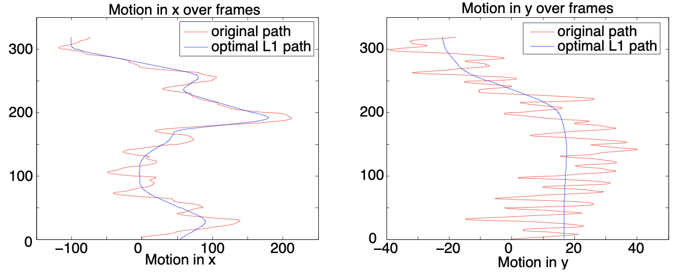
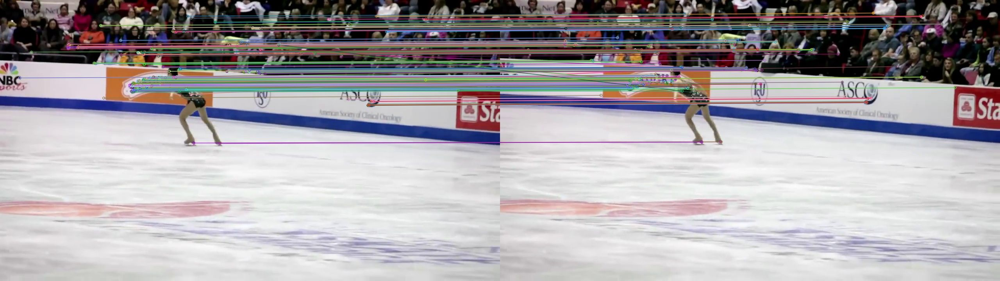
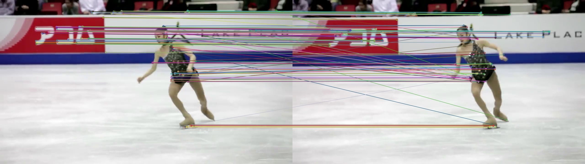
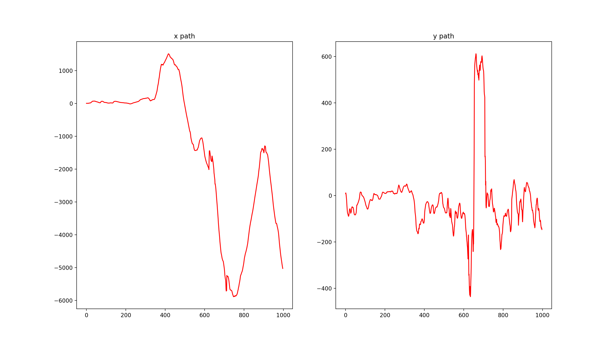
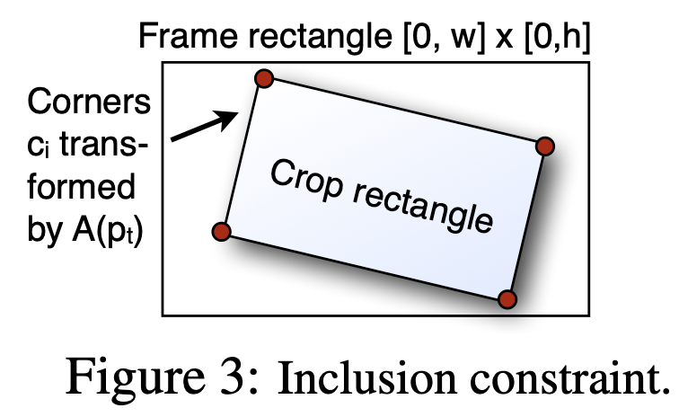
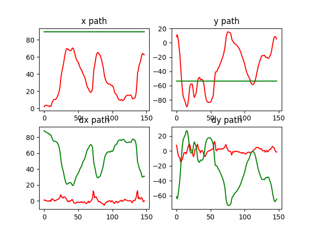
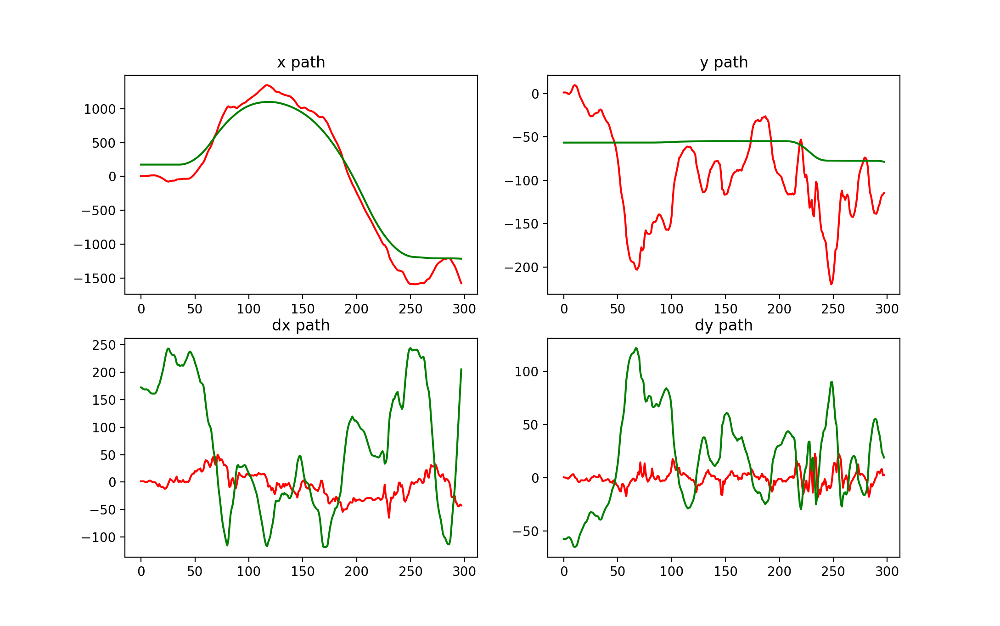
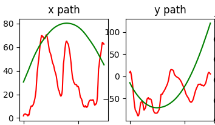

Auto Directed Video Stabilization
June 5th, 2020
Since my junior year of college I’ve been in love with the field of Computer Vision and low level image processing. While working on my final project for the class I came across a paper titled Auto-Directed Video Stabilization with Robust L1 Optimal Camera Paths, from Google and its captivated me ever since (link to the paper). With the quarantine recently I finally had time to revisit the paper and thoroughly read it. I decided to reimplement this and in this post I wanted to summarize my learnings and present the larger ideas in a more bitesized format.
Background
Throughout my Computer Vision class, our assignments had us build up an image processing library in C++ notably including edge/feature detection, optical flow, and panorama stitching. It was while researching for my final project that I came across the paper from Google. Our final project was open ended and I chose to implement video stabilization using many of the previous assignments as building blocks.
However, having decided to attack the problem with two days till the deadline, as every college student does, I read the paper quite fast glancing over the details and focused on trying to pull out the major ideas. To be absolutely honest once I got to the section on Linear Programming the details largely flew over my head, but I was able to gather three major steps:
- Estimate Original Path
- Calculate smooth path
- Warp each frame to the new path
I was on the right track with the first and third step in my initial implementation. I used my Harris corner detector to find feature points in each frame and using code for panorama stitching I extracted feature matches between frames using RANSAC to keep inliers. With the matches I then calculated a homography between each frame pair to describe the motion of pixels. Where my implementation differed was on the second step; having homographies \(H_1, H_2, …, H_{n-1}\) I had an estimated camera trajectory for n frames and my idea was that for each homography I would replace it with a new homography computed as the gaussian average over a window of neighbouring homographies. I would then use this new series of homographies as the smooth path. By using the inverse smooth path matrices and biliniear interpolation I could project points backwards to the original frame and fill in each pixel value.
It was a far more basic implementation than what was suggested in the paper and my hypothesis was that the larger the window the more prior and preceding information homographies at each time step would have, therefore the smoother the resulting curve. In the most loose sense of the term, it worked. I could form a new video but the results were far from desirable. The result was that high frequency and jarring jitter was suppressed rather than eliminated and in reality the overall videos were not much of an improvement. Some segments did see significant smoothing, but the lack of consistency acted as a hindrance making it more difficult to watch.
If you’re interested in the image processing library and the code behind this implementation you can see it in this repo.
Diving into the paper and reimplementation
The high level idea in the paper is to replace ‘handheld’-like footage with motion that mimics professional cinematography techniques. Taking original motion of the camera the method aims to fit segments with either constant, linear, or parabolic trajectories. This graph from the paper helps to visualize the objective.

Like in my initial implementation there are three distinct phases of the video stabilization pipeline presented in the paper and I’ll go through each one independently below.
1. Estimate Original Path
Like any problem, the first step is to understand what we are trying to solve and in this case that comes in the form of the original camera motion. The motion of the camera is defined as the sequence of homographies between each frame for n frames we will have (n-1) homographies; \(H_1, H_2, …, H_{n-1}\). In the paper and my implementation we use an affine homography which is a special case of a homography of the form:
$$ \begin{vmatrix} a & b & tx \\ c & d & ty \\ 0 & 0 & 1 \\ \end{vmatrix} $$The affine transform has 6 degrees of freedom as opposed to 8 degrees available with the general homography and also preserves parallelism in its warps. If you’re interested in the details behind homographies I recommend going through the slides here: (UW CSE 455 Slides on Features, Matching, and RANSAC).
To find the motion between a pair of subsequent frames we begin by detecting feature points in each frame and then trying to match the corresponding feature points. Feature point detection is a whole subspace within computer vision which is incredibly interesting and I recommend taking a dive into. As opposed to the Harris Corner Detector used in my initial implementation I opted for ORB since it was open source, fast, and more robust than Harris.
Once feature points are extracted from all frames we can attempt to match these features between subsequent frame pairs. The computation to determine a match differs between detection algorithms because of the way each chooses to describe a feature and so I won’t go into it here. Another important point is that it’s common for the a match to be wrong. Below are some of the matches I extracted between frames and you can see while in the first pair the matches are mostly consistent in the second there are a few outliers.


With the matches we can now solve for the homography between the two frames. The computation comes down to a system of equations. Remember the form for a homography is
$$ H = \begin{vmatrix} a & b & tx \\ c & d & ty \\ 0 & 0 & 1 \\ \end{vmatrix} $$\(Hx = x’\) s.t \(x\) is a homogenous coordinate vector \(\begin{bmatrix}x \\ y \\ 1\end{bmatrix}\)
When you take \(H\) and multiply it by a homogenous co-ordinate \(x\) we would hope to obtain \(x’\) the matching point in the next frame. In this case we know \(x\) and \(x’\) and we solve for \(H\). There are 6 unknowns in an affine homography so we need at least 3 matching points in order to solve this system. In addition we also have to take care of the outliers which we do using a technique called RANSAC (RAndom SAmple Consensus). The pseudo code is:
for n iterations
1. randomly pick three feature point matches
2. solve system to compute H
3. compute the number of inliers for H by projecting matches according to H and seeing whether the difference falls within some epsilon
4. keep H that has the most inliers
Re-compute H using all of the inliers with the least squares estimate method
return HLuckily all this work is done in OpenCV with cv.findHomography() and cv.estimateAffine2D() to find the full or affine homography respectively. Performing this on each frame pair’s feature matches we then get a list of
n-1 homographies description the motion through each frame.
To plot the trajectory I start with the point \((1, 1, 1)\), this could be any start point, and then I chain matrix multiplications of the homographies. ex: \(H_{n-1} * ... * H_3 * H_2 * H_1(x)\) my results for the first 1000 frames of my test video is depicted in the following graph.

2. Calculate Smooth Path
In honesty everything to this point is considered setup for what the core of the paper discusses which is given this existing path how do we determine the smooth path?
We know we want to replace the motion with one of three types, constant, linear, and parabolic and these can be quantified mathematically as regions of the smooth path P(t) that have one of the following properties:
- \(D(P) = 0\) — the first derivative of the path is 0 meaning the original motion of P was a horizontal line and 0 slope (i.e. \(P(t) = 4\))
- \(D^2(P) = 0\) — the second derivative of the path is 0 meaning the original motion was some line with a non-zero slope (i.e. \(P(t) = 4x + 5\))
- \(D^3(P) = 0\) — the third derivative of the path is 0 meaning the original motion was parabolic-like (i.e. \(P(t) = 4x^2\))
The paper forms this as an L1 minimization problem and the reason for L1 like almost every time L1 is used is because we want to take advantage of the solution space being sparse meaning the coefficients are highly significant making them either very close to 0 or very far from 0. In this application we can force the derivatives to be exactly 0. For background on L1 norms and minimization see (Colorado's Linear Programming slides and this medium post on L1 norm regularization and sparsity)
In addition to the above objective we have additional constraints:
- Inclusion Constraint - For smoothing the idea is to have a crop window that follows the smooth path within the original frames rather than warp the full frames because this leads to strange frame shapes, artifacts, and black borders around the frame so to keep a consistently sized window we are essentially moving a crop window within the frames and this contraint ensures that the warp we apply to the cropped area is within the overall frame bounds. Below is a useful visual taken from the paper: 
- Proximity Constraint - we want to preserve the movie in the way it was filmed the paper gives a great example that if the original camera was zooming our smooth path should also zoom in correctly instead of deciding that some warp should be applied to keep the same z-axis.
- Saliency Constraint - This I consider a extra feature that Google provides and one that I didn’t implement but the idea of which is that we want to keep the main subject within the crop window/smooth path so we want the smooth path to focus on the salient points.
With the objective and the constraints laid out it lends itself nicely to formulate a solution via Linear Programming. The objective is:
$$ O(P) = w_1|D(P)| + w_2|D^2(P)| + w_3|D^3(P)| $$where \(w_1\), \(w_2\), and \(w_3\) are weights for how much we wish to favour/incorporate segments of that type. In my implementation I choose 10, 1, 100 respectively going off the results in Figure 8 of the research paper. In the results section below I also have graphs showing what I obtained when varying the weights.
To minimize all of the L1 norms we use forward differencing the derivation of which for all three derivatives is quite easy to follow and laid out on page 3 of the paper. I want to instead focus on the implementation and more tangible side for those that may understand better by seeing code. To solve this linear programming problem in python I used a convex optimization package called cvxpy with which I experienced limitations I will go into detail with when discussing results. The full source code can be found here: https://github.com/thejarlid/VideoStabilizationPy
weight_constant = 10 # weight towards constant 0 velocity path
weight_linear = 1 # weight towards segments with a non-zero velocity
weight_parabolic = 100 # weight towards segments with parabolic motion
affine_weights = np.transpose([1, 1, 100, 100, 100, 100]) # weighting of each component in the path vector we want to weight the affine portion more than the translation components
smooth_path = cp.Variable((n, 6)) # matrix of the n smooth paths vectors that we are optimising to find
slack_var_1 = cp.Variable((n, 6)) # Slack variable for constraining residual 1
slack_var_2 = cp.Variable((n, 6)) # Slack variable for constraining residual 2
slack_var_3 = cp.Variable((n, 6)) # Slack variable for constraining residual 3
objective = cp.Minimize(cp.sum((weight_constant * (slack_var_1 @ affine_weights)) +
(weight_linear * (slack_var_2 @ affine_weights)) +
(weight_parabolic * (slack_var_3 @ affine_weights)), axis=0))
The above lines simply create the variables I will need. smooth_path is an n x 6 matrix where n is the number of timesteps each row is a vector of 6 variables each one corresponding to a variable in the affine transform. Each row in smooth_path is of the form \((tx, ty, a, b, c, d)\). this is what we want to optimize. We want to find the correct value for each vector row of smooth_path. The slack variables are used to constrain the path and the objective is defined to minimize \(c^Te\). e being the slack variable.
I next add the proximity constraints:
# proximity constriants
# U is used to extract components from the vector smooth_path. We want to constrain
# the values of our path vector to the following:
# 0.9 <= a, d <= 1.1
# -0.1 <= b, c <= 0.1
# -0.1 <= a - d <= 0.1
# -0.05 <= b + c <= 0.05
U = np.array([0, 0, 0, 0, 0, 0,
0, 0, 0, 0, 0, 0,
1, 0, 0, 0, 1, 0,
0, 1, 0, 0, 0, 1,
0, 0, 1, 0, 0, 1,
0, 0, 0, 1, -1, 0]).reshape(6, 6)
lb = np.array([0.9, -0.1, -0.1, 0.9, -0.1, -0.05])
ub = np.array([1.1, 0.1, 0.1, 1.1, 0.1, 0.05])
proximity = smooth_path @ U
for i in range(n):
constraints.append(proximity[i, :] >= lb)
constraints.append(proximity[i, :] <= ub)
To understand what is going on above its helpful to consider a single vector of smooth_path. We want the following constraints on \(a\), \(b\), \(c\), and \(d\) in our vector; $$ 0.9 ≤ a , d ≤ 1.1 $$ $$ −0.1 ≤ b, c ≤ 0.1 $$ $$ −0.05 ≤ b +c ≤ 0.05 $$ $$ −0.1 ≤ a − d ≤ 0.1 $$ When the vector \(p(t)\) of the form \((tx, ty, a, b, c, d)\) is multiplied by U the first column in U extracts a, the second extracts b, the third extracts, c, the fourth extracts d, the fifth column gives us a - d, and the sixth column gives us b + c so our resulting vector is of the form \((a, b, c, d, a - d, b + c)\) we then compare elementwise to lb and ub. Looking at the first element this comparison/constraint performs \(0.9 ≤ a ≤ 1.1\). This idea translates to all elements in the proximity vector, lb, and ub.
After the proximity constraints I add the inclusion constraints to ensure the smooth transform will keep the crop window within the frame bounds. Since we are working with a fixed crop ratio we take new corner points of the crop window centred in the frame and project them according to the smooth_path. We then declare that whatever the projected coordinates be that they are at least greater than or equal to 0 and within the width and height of the frame.
# inclusion constraints for the crop corners
# want to make sure the corner points when projected are within the frame dimensions
corners = get_corner_crop_pts(frame_dimensions)
for corner in corners:
x, y = corner
projected_x = smooth_path @ np.transpose([1, 0, x, y, 0, 0]) # x' = tx + ax + by
projected_y = smooth_path @ np.transpose([0, 1, 0, 0, x, y]) # y' = ty + cx + dy
constraints.append(projected_x >= 0)
constraints.append(projected_y >= 0)
constraints.append(projected_x <= frame_dimensions[1])
constraints.append(projected_y <= frame_dimensions[0])
Finally the smoothness constraints:
# Smoothness constraints
constraints.append(slack_var_1 >= 0)
constraints.append(slack_var_2 >= 0)
constraints.append(slack_var_3 >= 0)
for i in range(n - 3):
# Extract smooth path component variables into a matrix we can then use to calculate each residual
# Residual 1 is for the constant zero velocity path
# Residual 2 is for the constant non-zero velocity path
# Residual 3 is for the parabolic non zero acceleration path
B_t = np.array([smooth_path[i, 2], smooth_path[i, 4], 0,
smooth_path[i, 3], smooth_path[i, 5], 0,
smooth_path[i, 0], smooth_path[i, 1], 1]).reshape((3,3))
B_t1 = np.array([smooth_path[i+1, 2], smooth_path[i+1, 4], 0,
smooth_path[i+1, 3], smooth_path[i+1, 5], 0,
smooth_path[i+1, 0], smooth_path[i+1, 1], 1]).reshape((3,3))
B_t2 = np.array([smooth_path[i+2, 2], smooth_path[i+2, 4], 0,
smooth_path[i+2, 3], smooth_path[i+2, 5], 0,
smooth_path[i+2, 0], smooth_path[i+2, 1], 1]).reshape((3,3))
B_t3 = np.array([smooth_path[i+3, 2], smooth_path[i+3, 4], 0,
smooth_path[i+3, 3], smooth_path[i+3, 5], 0,
smooth_path[i+3, 0], smooth_path[i+3, 1], 1]).reshape((3,3))
residual_t = np.transpose(timewise_homographies[i + 1]) @ B_t1 - B_t
residual_t1 = np.transpose(timewise_homographies[i + 2]) @ B_t2 - B_t1
residual_t2 = np.transpose(timewise_homographies[i + 3]) @ B_t3 - B_t2
residual_t = np.array([residual_t[2, 0], residual_t[2, 1], residual_t[0, 0],
residual_t[1, 0], residual_t[0, 1], residual_t[1, 1]])
residual_t1 = np.array([residual_t1[2, 0], residual_t1[2, 1], residual_t1[0, 0],
residual_t1[1, 0], residual_t1[0, 1], residual_t1[1, 1]])
residual_t2 = np.array([residual_t2[2, 0], residual_t2[2, 1], residual_t2[0, 0],
residual_t2[1, 0], residual_t2[0, 1], residual_t2[1, 1]])
# this is where the actual smoothness constraint is obtained from the residuals
# i.e. this is where we summarized the following:
# -e_t1 <= R_t(p) < e_t1
# -e_t2 <= R_t1(p) - R_t(p) < e_t2
# -e_t3 <= R_t2(p) - 2R_t1(p) + R_t(p) < e_t3
# if we can vectorize the below constraints we can speed this up and most likely get better results
# being able to smooth over more frames
for j in range(6):
constraints.append(residual_t[j] <= slack_var_1[i, j])
constraints.append(residual_t[j] >= -slack_var_1[i, j])
constraints.append((residual_t1[j] - residual_t[j]) <= slack_var_2[i, j])
constraints.append((residual_t1[j] - residual_t[j]) >= -slack_var_2[i, j])
constraints.append((residual_t2[j] - 2*residual_t1[j] + residual_t[j]) <= slack_var_3[i, j])
constraints.append((residual_t2[j] - 2*residual_t1[j] + residual_t[j]) >= -slack_var_3[i, j])
for i in range(n-3, n):
constraints.append(smooth_path[i, 5] == smooth_path[n-1, 5])
I tried to document the code above with comments describing what is going on and for the large part it correlates directly to the residual derivation in the paper. To reiterate the major chunks we first create B_t, B_t1, B_t2, and B_t3 for the current time step by extracting the smooth_path vector at time t into a matrix of the form
$$ B_t = \begin{vmatrix} a & c & 0 \\ b & d & 0 \\ tx & ty & 1 \\ \end{vmatrix} $$This is just an affine homography transposed and we then use these to form our three residuals. We then add the appropriate constraints on the residuals according to the paper and these comments:
$$ -e_{t1} <= R_t(p) < e_{t1} $$ $$ -e_{t2} <= R_{t1}(p) - R_t(p) < e_{t2} $$ $$ -e_{t3} <= R_{t2}(p) - 2R_{t1}(p) + R_t(p) < e_{t3} $$The issue is that we do this element wise instead of in vectorized format leading to some efficiency issues. I want to say this is because of my inexperience with the cvxpy package rather than an inherent limitation on the python language and cvxpy in general. If anyone does know how I can vectorize or improve this smoothness constraint I would love to know. I spent a long time trying to vectorize and use slices, but hit compilation errors.
In code the final steps is to just let the convex optimization package solve this for us and upon completion the smooth_path variable will be populated. A final bit of post processing is to take each of the n smooth_path vectors and turn them into n affine homographies and return them in a list.
3. Produce new ‘smooth’ frames
Now that the hard work above is over we can produce new frames. To do so is quite simple take the corners of the crop window centred at the middle of the original frame and warp it according to the smooth path homography we found at the associated time step. The final step is since in our final frame we want the top left corner to correspond to (0, 0), the top right to correspond to (0, w), bottom left to (h, 0), and bottom right to (h, w) we find our final homography by just saying project this warped crop window now into a straight window and produce a final frame.
Results and improvements
Given that my goal was to revisit the problem to better understand the paper that in itself is a result to me. Along the way I got to revisit my passion for CV, dive deeper into the mathematics behind homographies, and expose myself to field of linear and convex optimizations and linear programming.
This time around the results I produced were more stable than before here is a gif of a short segment the left being the original and the right being my produced frames.

Its clear to see that the cropped one has far less motion, the angle of the frame is slightly off and this is becasue I was smoothing over 150-300 frames at a time rather than the full video. If I were able to smooth over the whole video the constraints would know about motion later in the video and so the orientation it would pick would be one in which the rotation is correct. The reason I had to work with small segments of frames was because of the vectorization or lack thereof when adding the residual constraints. This has significant impact on the convex optimization package during compile time since as frames start to increase the number of variables in our linear programming problem increase drastically. When smoothing ~300 frames on my machine the process took 30+ minutes so as more frames added I hit time and memory limits. I have a feeling if I were able to figure out vectorized formats for the smoothing constraint compilation of the problem would be faster. However, even with just 300 frames the results are impressive.
I also plot the x and y motion before and after smoothing to view the results for various segments that took advantage of different motion models. Below are the results with green representing the smoothed motion and red being the original trajectory


Finally I also wanted to test changes in weight and see what would happen if I only wanted parabolic motion and the resulting graph comes from w1 = w2 = 0, w3 = 100. This is on the same path as the first 150 frames above where we obtained strictly constant paths.

All in all I think the methods in this paper are really really interesting, the thing about computer vision is that you get extremely tangible results. I'm quite happy to put to rest that part of my mind bringing me back to solve this problem.
![logo]()
![logo]()
![logo]()
![logo]()